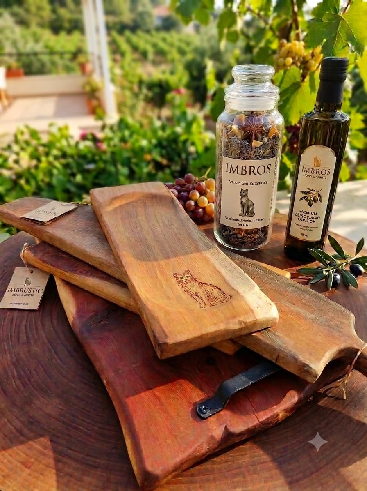
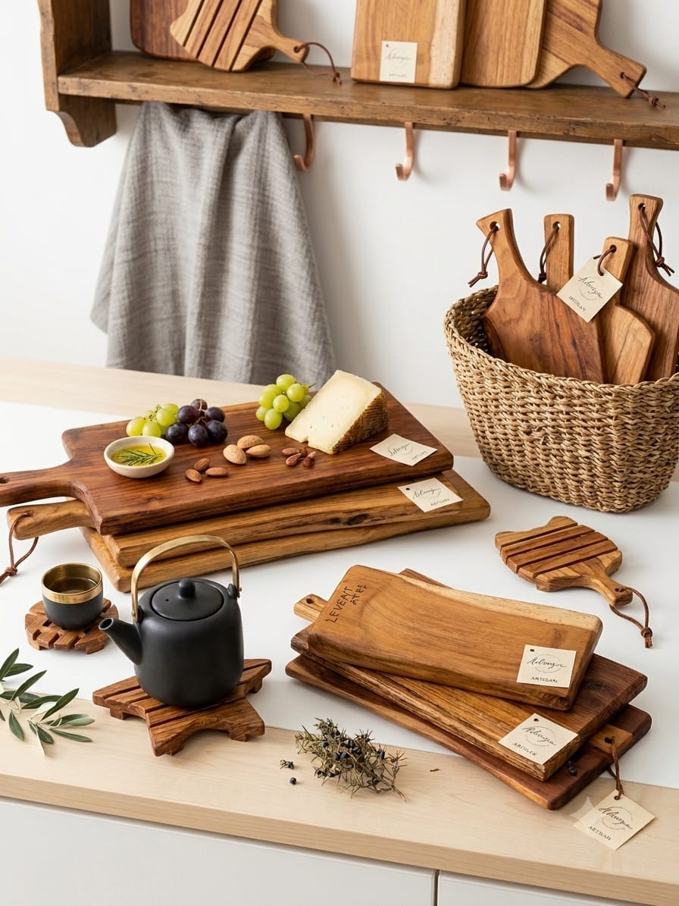
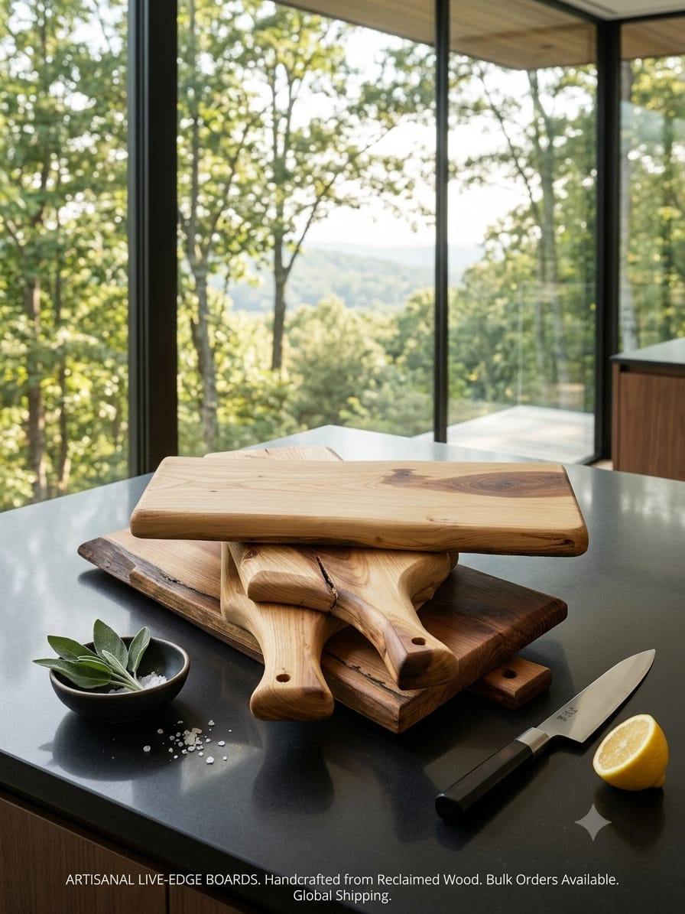

doğal el yapımı ahşap ürünler
doğanın özgün dokusunu usta ellerin emeğiyle buluşturuyoruz. her bir parçamız, zeytin ve ceviz ağaçlarının benzersiz desenlerini taşıyan tamamen el yapımı özel tasarımlardır.
doğanın özgün dokusunu usta ellerin emeğiyle buluşturuyoruz. her bir parçamız, zeytin ve ceviz ağaçlarının benzersiz desenlerini taşıyan tamamen el yapımı özel tasarımlardır.

yıllanmış zeytin ağaçlarının benzersiz damar yapılarıyla hazırlanan şık ve dayanıklı sunum tahtaları.

hiçbir kimyasal madde kullanılmadan, geleneksel marangozluk teknikleriyle şekillendirilen tasarımlar.

organik soğuk sıkım zeytinyağı ve doğal balmumu ile beslenmiş, gıdaya uygun yüzeyler.

ağacın kendi doğal formuna sadık kalınarak üretildiği için her ürün tek ve kişiye özeldir.

sofralarınıza ve mutfağınıza ahşabın doğal sıcaklığını ve zamansız zarafetini katın.

doğaya saygılı, uzun ömürlü ve geri dönüştürülebilir malzemelerle geleceğe miras ürünler.